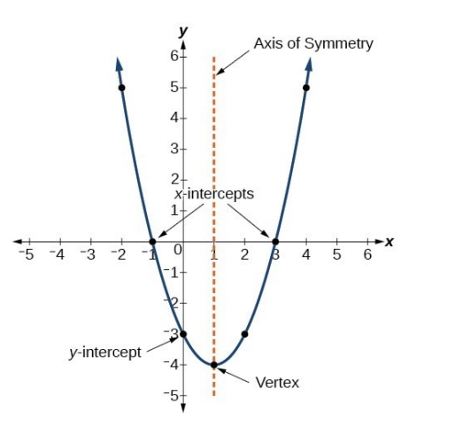
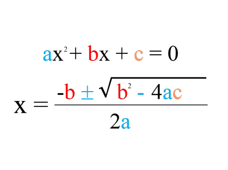

Select a Function

Function Explanation
This is where the math explanation appears: domain, range, monotonicity, symmetry, etc.
Function Explanation
This function is even, symmetric about the y-axis, and its graph opens upward.